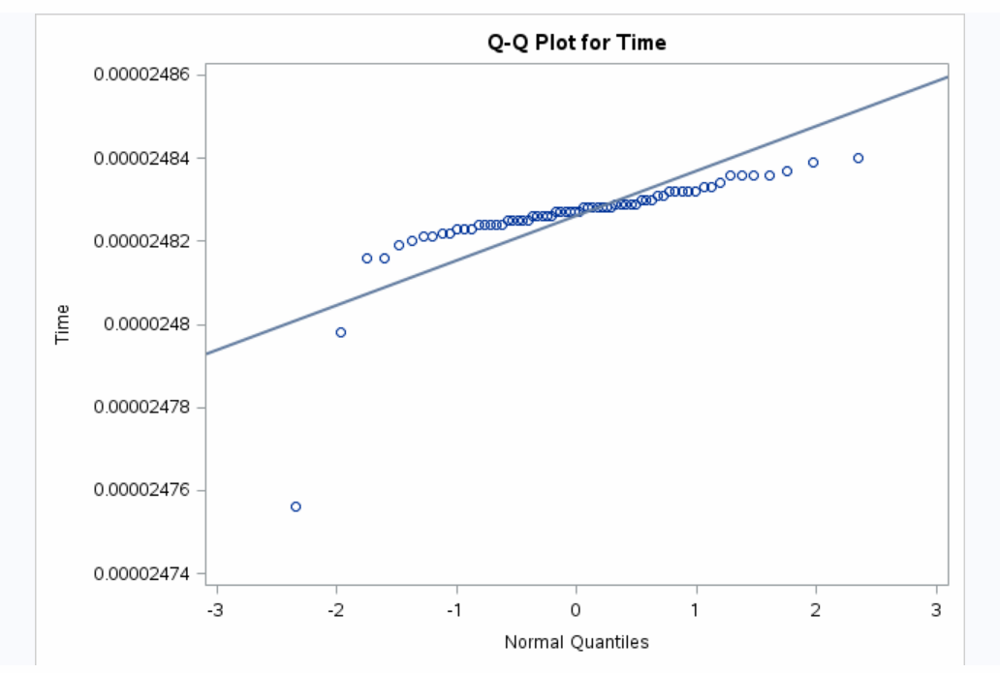
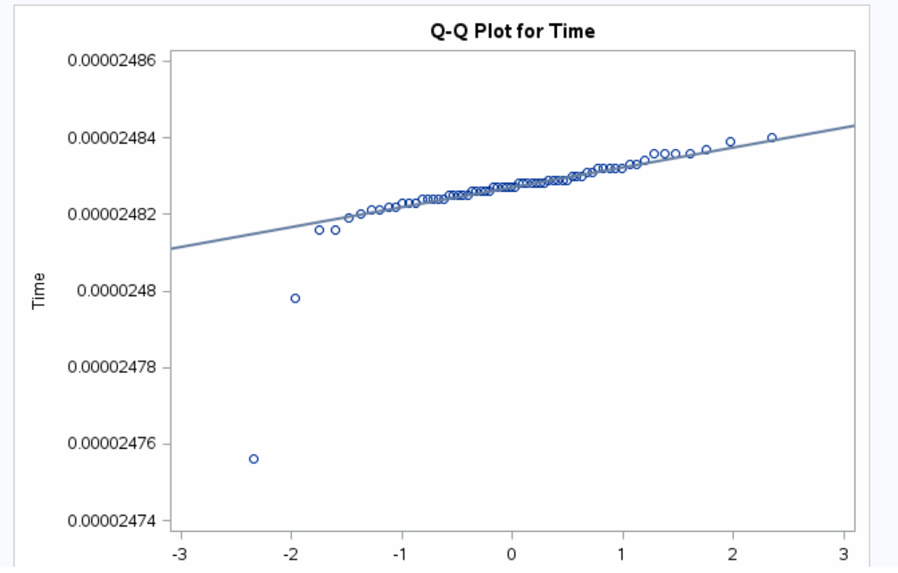
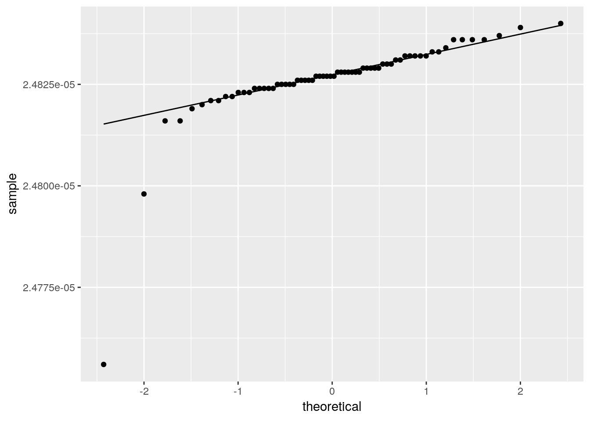

Estimating sigma using quantiles
Packages
There will be some R later, with some random number generation. I set the random number seed for reproducibility:
library(tidyverse)## ── Attaching packages ─────────────────────────────────────────────────────────────────────────── tidyverse 1.2.1 ──## ✔ ggplot2 3.1.0 ✔ purrr 0.3.0
## ✔ tibble 2.0.1 ✔ dplyr 0.7.8
## ✔ tidyr 0.8.2 ✔ stringr 1.4.0
## ✔ readr 1.3.1 ✔ forcats 0.3.0## ── Conflicts ────────────────────────────────────────────────────────────────────────────── tidyverse_conflicts() ──
## ✖ dplyr::filter() masks stats::filter()
## ✖ dplyr::lag() masks stats::lag()set.seed(457299)Introduction
So, the other day, I was making normal quantile plots using SAS. As you do. I was using Simon Newcomb’s famous data on the speed of light, and I used this code:
proc univariate noprint;
qqplot Time / normal(mu=est sigma=est);and got this output:

The idea of a normal quantile plot is that if your data really comes from a normal distribution, the points will follow the line (at least approximately), and the way in which they don’t follow the line tells you how your data values are not normally distributed. I looked at this one and thought “well, these are not too bad, apart from that outlier at the bottom left”, and the message seems to be that one of those values is much lower than the others. Thus, if you were using these data to estimate the true speed of light, it would be dangerous to use the sample mean, because it will be pulled downwards by that low value.
The way SAS adds a reference line to the normal quantile plot is to ask you to specify mu and sigma for the normal distribution. If you don’t want to specify them, SAS is happy to estimate them, which it does the standard way using the sample mean and standard deviation. Or you can specify numeric values for them.
But, I thought, when you have outliers, or skewness, which you often will when you are using a normal quantile plot, the sample mean and standard deviation are the last things you should be using. But, SAS asks you to supply numbers for mu and sigma. What numbers are you going to use?
Estimating mu and sigma using quantiles
A normal distribution is symmetric, so mu is equal to both its mean and its median. So, estimating mu is easy: if you are worried about outliers, use the sample median instead of the sample mean.
But how to estimate sigma? It is a measure of spread, so something to think about instead of the standard deviation would be a measure of spread like the interquartile range. This, like the median, won’t be affected by outliers.
In a standard normal distribution, the quartiles are about \(\pm 0.675\):
q=c(0.25,0.75)
qnorm(q)## [1] -0.6744898 0.6744898which means that the interquartile range is about \(0.675-(-0.675)=1.35\). That is, the IQR is 1.35 times as big as the SD. A normal distribution with SD \(\sigma\) is a standard normal made wider by a factor \(\sigma\) (and translated sideways by the mean), so the IQR of a general normal distribution is \(1.35\sigma\). This means that we can estimate \(\sigma\) by taking the sample interquartile range and dividing it by 1.35.
This may not be very efficient (in the sense that, if the data really are normal, you can estimate \(\mu\) and \(\sigma\) more accurately using the sample mean and SD), but our main aim here is to protect ourselves against trouble, and so this ought to be a reasonable idea. How does it play out here? Here is some of the Newcomb data:
Newcomb %>% slice(1:10)## Time Series
## 1 2.4828e-05 1
## 2 2.4826e-05 1
## 3 2.4833e-05 1
## 4 2.4824e-05 1
## 5 2.4834e-05 1
## 6 2.4756e-05 1
## 7 2.4827e-05 1
## 8 2.4816e-05 1
## 9 2.4840e-05 1
## 10 2.4798e-05 1The median and IQR are:
(Newcomb %>% summarize(med=median(Time), iqr=IQR(Time)) -> d)## med iqr
## 1 2.4827e-05 6.75e-09and thus our estimate of \(\sigma\) is
d$iqr/1.35## [1] 5e-09Putting those values in for mu and sigma gives this normal quantile plot:

The story is now quite different: there are actually two outliers at the bottom, and the rest of the observations are very close to what you’d expect in a normal distribution. This suggests that the bottom two observations are actually errors. Using the IQR to estimate sigma with seems to work very well for this purpose. This is the kind of thing R does with its normal quantile plot:
ggplot(Newcomb, aes(sample=Time))+stat_qq()+stat_qq_line()
The help file says that the line goes through the observed and theoretical quartiles.
Using other quantiles to estimate \(\sigma\)
But, I only used the quartiles because the IQR happened to come to mind as a measure of spread. The normal distribution is symmetric, so any pair of quantiles symmetrically placed about the mean (median) could be used, such as the 40th and 60th percentiles, or the 10th and 90th percentiles. If you choose percentiles further apart, you’ll need to divide by something bigger to get a sensible estimate of \(\sigma\). How big? Well,
qnorm(0.90)-qnorm(0.10)## [1] 2.563103that big, if we use the 10th and 90th percentiles. The discussion earlier also applies here: this is for a standard normal, but if the SD is not 1, the difference between 10th and 90th percentiles will still be 2.56 times whatever the SD is.
It seems like we should have a function that takes a quantile and returns that difference that we will need to divide by:
divisor=function(p) {
abs(qnorm(p)-qnorm(1-p))
}and to test it on values where we know the answer already:
divisor(c(0.10,0.25,0.75,0.90))## [1] 2.563103 1.348980 1.348980 2.563103I used the abs in the function to allow for input of either the high end or the low end.
Finding the best quantiles to estimate \(\sigma\) with
I’m thinking that if you use a pair of quantiles too close to the centre of the distribution, you won’t get too much sense of the spread, and if you use a pair of quantiles too far out in the tails, you’ll get done in by the extremeness of the extreme values you happen to observe (which, in real data, might be outliers). So there ought to be a happy medium: a pair of quantiles not too far out that will estimate \(\sigma\) more accurately than any other pair.
We can do a simulation to find out whether this idea is right, and if it is, where the happy medium lies. The similarity in shape of the normal distribution for any value of \(\sigma\) means that we can simulate from the standard normal and the results we get will apply for any \(\sigma\).
Let’s make a list of the quantiles we’re going to use in the simulation (the low end):
qq=c(0.01,0.025,0.05,0.075,0.1,0.15,0.20,0.25,0.4)and generate some random normal data:
(z=rnorm(50))## [1] 1.621867352 -0.746347365 -0.268930797 -0.699535090 0.213237930
## [6] 0.708968535 -1.078329045 0.791310415 0.004046959 1.095879569
## [11] -1.655475142 -1.206874304 1.268749118 0.838393233 -0.746106341
## [16] 0.052753612 1.514875388 -0.112308710 0.266535207 -1.720378300
## [21] 1.160778666 0.471876517 0.944608052 -0.807257675 0.279188834
## [26] 0.686444356 0.607641604 0.071344093 -0.154485997 -1.177612022
## [31] 0.012286032 -0.644232045 1.402745042 -0.865977059 1.324754616
## [36] 1.468643130 1.196362551 1.434646249 -0.579221119 0.378456915
## [41] -0.166149025 -0.644332211 -2.158475531 -1.158177890 0.519147525
## [46] -0.996153379 -0.112548668 0.203054949 -2.051009895 0.083031555Let’s make a table of divisors (that we calculate once and re-use):
(tibble(lo=qq, hi=1-qq) %>%
mutate(div=divisor(lo)) -> divs)## # A tibble: 9 x 3
## lo hi div
## <dbl> <dbl> <dbl>
## 1 0.01 0.99 4.65
## 2 0.025 0.975 3.92
## 3 0.05 0.95 3.29
## 4 0.075 0.925 2.88
## 5 0.1 0.9 2.56
## 6 0.15 0.85 2.07
## 7 0.2 0.8 1.68
## 8 0.25 0.75 1.35
## 9 0.4 0.6 0.507and now we have to obtain all those quantiles for our random data, work out the differences, and divide by the right divisor:
divs %>% mutate(z_lo=quantile(z,lo), z_hi=quantile(z,hi)) %>%
mutate(sigma_hat=(z_hi-z_lo)/div)## # A tibble: 9 x 6
## lo hi div z_lo z_hi sigma_hat
## <dbl> <dbl> <dbl> <dbl> <dbl> <dbl>
## 1 0.01 0.99 4.65 -2.11 1.57 0.790
## 2 0.025 0.975 3.92 -1.98 1.50 0.888
## 3 0.05 0.95 3.29 -1.69 1.45 0.956
## 4 0.075 0.925 2.88 -1.35 1.41 0.961
## 5 0.1 0.9 2.56 -1.18 1.33 0.980
## 6 0.15 0.85 2.07 -1.05 1.18 1.08
## 7 0.2 0.8 1.68 -0.819 0.975 1.07
## 8 0.25 0.75 1.35 -0.734 0.771 1.12
## 9 0.4 0.6 0.507 -0.129 0.272 0.791In this case, the estimate of \(\sigma\) closest to the true value of 1 is 0.98, for the 10th and 90th percentiles.
We’re going to do this lots of times in a moment, so let’s make this into a function. It will have two inputs: the sample of random normals, and the table of quantiles and divisors. I’ll return only the quantiles and estimates of sigma:
estimates=function(z,divs) {
divs %>% mutate(z_lo=quantile(z,lo), z_hi=quantile(z,hi)) %>%
mutate(sigma_hat=(z_hi-z_lo)/div) %>%
select(q=lo,sigma_hat)
}To generate many random samples, I’ll use rerun, which is the tidyverse version of the base R replicate. Let’s start from small beginnings:
rerun(5,rnorm(4))## [[1]]
## [1] 0.5832606 -0.8601665 -0.3270047 -0.2753042
##
## [[2]]
## [1] 0.007565819 -0.624116696 -0.062118656 0.233042042
##
## [[3]]
## [1] 0.05757444 -2.42125707 -0.29280899 0.04249248
##
## [[4]]
## [1] 0.75268978 0.02598616 -0.25275065 -1.66833677
##
## [[5]]
## [1] 2.6685238 0.5419123 -0.5986237 1.2115979This is 5 random samples of size 4, which come out in a list. I recently learned about enframe, which turns vectors and lists into two-column data frames:
rerun(5,rnorm(4)) %>%
enframe()## # A tibble: 5 x 2
## name value
## <int> <list>
## 1 1 <dbl [4]>
## 2 2 <dbl [4]>
## 3 3 <dbl [4]>
## 4 4 <dbl [4]>
## 5 5 <dbl [4]>The first column numbers the random samples, and the second contains the samples themselves, in a list-column. Now that we know how it works, let’s generate bigger samples, and give the columns better names:
rerun(5,rnorm(50)) %>%
enframe(name="sample_number", value="sample")## # A tibble: 5 x 2
## sample_number sample
## <int> <list>
## 1 1 <dbl [50]>
## 2 2 <dbl [50]>
## 3 3 <dbl [50]>
## 4 4 <dbl [50]>
## 5 5 <dbl [50]>Next, for each of those samples, we want to generate the data frame of estimates of \(\sigma\):
rerun(5,rnorm(50)) %>%
enframe(name="sample_number", value="sample") %>%
mutate(ests=map(sample, ~estimates(.,divs)))## # A tibble: 5 x 3
## sample_number sample ests
## <int> <list> <list>
## 1 1 <dbl [50]> <tibble [9 × 2]>
## 2 2 <dbl [50]> <tibble [9 × 2]>
## 3 3 <dbl [50]> <tibble [9 × 2]>
## 4 4 <dbl [50]> <tibble [9 × 2]>
## 5 5 <dbl [50]> <tibble [9 × 2]>and then pull out the estimates so that we can summarize them:
rerun(5,rnorm(50)) %>%
enframe(name="sample_number", value="sample") %>%
mutate(ests=map(sample, ~estimates(.,divs))) %>%
unnest(ests)## # A tibble: 45 x 3
## sample_number q sigma_hat
## <int> <dbl> <dbl>
## 1 1 0.01 0.984
## 2 1 0.025 0.978
## 3 1 0.05 1.01
## 4 1 0.075 1.10
## 5 1 0.1 1.10
## 6 1 0.15 1.08
## 7 1 0.2 1.04
## 8 1 0.25 1.15
## 9 1 0.4 1.26
## 10 2 0.01 0.976
## # … with 35 more rowsCompute the squared error of each estimate, and find the mean squared error for each quantile:
rerun(5,rnorm(50)) %>%
enframe(name="sample_number", value="sample") %>%
mutate(ests=map(sample, ~estimates(.,divs))) %>%
unnest(ests) %>%
mutate(sq_error=(sigma_hat-1)^2) %>%
group_by(q) %>%
summarize(mse=mean(sq_error))## # A tibble: 9 x 2
## q mse
## <dbl> <dbl>
## 1 0.01 0.0545
## 2 0.025 0.0520
## 3 0.05 0.0449
## 4 0.075 0.0370
## 5 0.1 0.0257
## 6 0.15 0.0160
## 7 0.2 0.0140
## 8 0.25 0.0200
## 9 0.4 0.0433This was rather a small-scale simulation, but the best here is the 20th and 80th percentiles. Before we do a bigger simulation, let’s put the above into a function with the sample size and number of simulations as inputs:
simulate=function(n,n_sim) {
rerun(n_sim,rnorm(n)) %>%
enframe(name="sample_number", value="sample") %>%
mutate(ests=map(sample, ~estimates(.,divs))) %>%
unnest(ests) %>%
mutate(sq_error=(sigma_hat-1)^2) %>%
group_by(q) %>%
summarize(mse=mean(sq_error))
}and then do it for real:
(d=simulate(50,10000))## # A tibble: 9 x 2
## q mse
## <dbl> <dbl>
## 1 0.01 0.0258
## 2 0.025 0.0193
## 3 0.05 0.0156
## 4 0.075 0.0151
## 5 0.1 0.0161
## 6 0.15 0.0174
## 7 0.2 0.0206
## 8 0.25 0.0258
## 9 0.4 0.0767This time the 7.5-92.5 percentile pair is best, and the 40-60 pair is clearly worst. Does that depend on sample size? Showing off a little:
best_q=function(d) {
d %>% arrange(mse) %>% pluck("q",1)
}
best_q(d)## [1] 0.075tibble(n=c(10,20,50,100)) %>%
mutate(sims=map(n,~simulate(.,10000))) %>%
mutate(q=map_dbl(sims,~best_q(.)))## # A tibble: 4 x 3
## n sims q
## <dbl> <list> <dbl>
## 1 10 <tibble [9 × 2]> 0.075
## 2 20 <tibble [9 × 2]> 0.075
## 3 50 <tibble [9 × 2]> 0.075
## 4 100 <tibble [9 × 2]> 0.075The 7.5-92.5 percentiles seem to be consistently the best.
This has been done before
… and back in 1949, at that. Benson (1949) wrote about this, and noted (citing a 1920 paper of Karl Pearson) that the estimator of \(\sigma\) with the smallest variance used the 7th and 93rd percentiles, for all sample sizes. My simulations are consistent with this.
Benson also estimated \(\mu\) using the mean of a pair of quantiles, and said that the variance of the estimator was minimized when you use the mean of the 27th and 73rd percentiles. This is almost the same thing as the midhinge, where hinge is Tukey’s term for the quartile.
An exam question
I had shown my students that you can estimate \(\sigma\) by taking the IQR and dividing by 1.35, so on my final exam I played with that idea a bit more. I had them use the 68-95-99.7 rule (which they have seen before) to show that the 16th and 84th
percentiles of a normal distribution are at \(\mu \pm \sigma\), and thus that taking the difference between those two percentiles and dividing by 2 (since they are \(2\sigma\) apart) is a sensible estimator of \(\sigma\). (Had I included 0.16 as one of my quantiles above, div for it would have been 2.) I then gave them some data for which the 16th percentile was 26, the 84th percentile was 48, and the median was 36, and asked them to estimate \(\mu\) and \(\sigma\). I thought the “obvious” estimator of \(\mu\) was the median, giving an estimate 36, but quite a lot of people noted that \(\mu-\sigma=26\) and \(\mu+\sigma=48\), and then solved the two equations for the two variables, getting estimates of 37 and 11. Full marks, of course. Little did they know, but on about the 70th anniversary of Benson’s work, they were using his idea.
The idea for all of this came, in fact, from one of my students, who casually asked after class, “couldn’t you use different percentiles to estimate \(\sigma\) with?”, and we talked about how you could, but you’d have to divide by something other than 1.35.
Future work
What would be relatively easy now (but this blog post is too long) is to compare the mean squared error of the best percentile-based estimator of \(\sigma\) with that of the sample SD. If it turns out that the mean squared error of the percentile estimator is not too much bigger, then we could recommend using the percentile estimator because of the additional protection it gives when there are outliers. (This is the same idea as using the Welch-Satterthwaite \(t\)-test in favour of the pooled one; W-S is not the best test if the two groups have the same variance, but it is a lot better if the variances are actually different.)
References
Reynold Jong (2018, personal communication, ie. a chat after class).
Benson, F. (1949). A Note on the Estimation of Mean and Standard Deviation from Quantiles. Journal of the Royal Statistical Society. Series B (Methodological), 11(1), 91-100. Retrieved from here